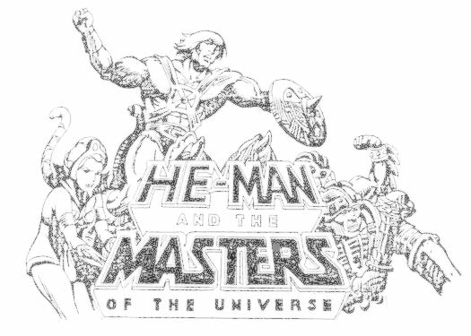

I. Crystal Abyss (feat. Spencer Whitfield)
CUT TO:
EXTERIOR - CASTLE GRAYSKULL

As He Man, Teela, and Orko cross the Jawbridge, Orko flies
playfully over the abyss that surrounds the castle. Orko does a
somersault, dipping deeper into the chasm.
CLOSE ON HE MAN
HE MAN
Better be careful Orko. The abyss can be very
dangerous.
ON ORKO
ORKO
To you, maybe, but I can fly!
TWO SHOT - HE MAN AND ORKO
HE MAN
Yes, but there are great winds and mystical
forces down there.
Orko looks down.
ORKO'S POV - THE ABYSS!
The chasm seems to drop off into infinity. A gaussian blur into
nothingness. The darkness is broken by small and distant flash
and thunder.
HE MAN (VO)
The abyss is the source from which Grayskull
gets its power.
ORKO
Gee, it looks like it goes down a long way!
HE MAN
It should, the abyss is bottomless!!
He Man's voice echoes for all of eternity.
SLOW FADE TO:
Skeleton plunging endlessly into the abyss.
(VO)
You don't know pain. You don't know pain.
Ref# :: He-Man and the Masters of the Universe, E. 83 "Into the Abyss"